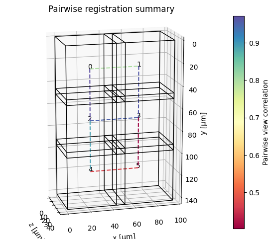
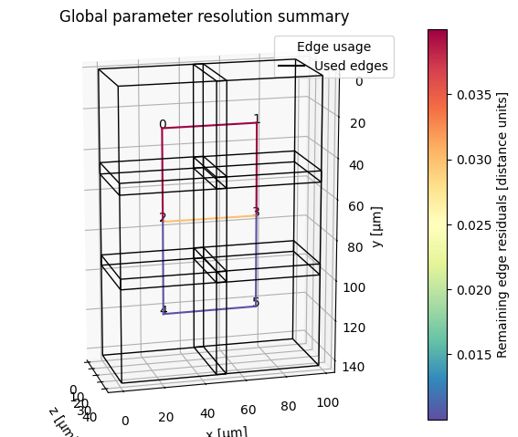

Registration overview
Registration aligns all views / tiles to a common physical coordinate system so they can subsequently be visualized or fused without misalignments or blurring. registration.register is the main entry point.
High-level workflow
graph LR
A[Input msims\n+ transform_key] --> B[Build overlap graph]
B --> C[Prune registration pairs]
C --> D[Pairwise registration\nper edge]
D --> E[Quality filtering\noptional]
E --> F[Global parameter\nresolution]
F --> G[Output transforms\n→ new_transform_key]
- Build overlap graph — from tile bounding boxes in the starting coordinate system (
transform_key). Edges connect tiles whose bounding boxes intersect (optionally extended byoverlap_tolerance). - Prune registration pairs — remove redundant or diagonal edges before running the (expensive) pairwise registration step.
- Pairwise registration — for each edge, crop the overlap region from both tiles and run a registration function to find the transform that aligns them.
- Quality filtering — optionally discard edges whose cross-correlation quality is below a threshold.
- Global parameter resolution — find a globally consistent set of transforms from the noisy pairwise estimates (least-squares-style optimization or shortest-paths chaining).
- Write transforms — attach the result as a new
transform_keyto every inputmsim.
Minimal example
from dask.diagnostics import ProgressBar
from multiview_stitcher import registration
with ProgressBar():
params = registration.register(
msims,
reg_channel="DAPI",
transform_key="stage_metadata",
new_transform_key="translation_registered",
)
params is a list of xr.DataArray transforms — one per view — mapping each view into the new coordinate system. The same transforms are also attached to the input msims under new_transform_key.
Key parameters
| Parameter | Default | Description |
|---|---|---|
msims |
— | List of MultiscaleSpatialImage inputs |
transform_key |
None |
Starting coordinate system (e.g. "stage_metadata") |
new_transform_key |
None |
Name for the output coordinate system. If None, transforms are returned but not written back to the msims. |
reg_channel |
None |
Channel name to use for registration (takes priority over reg_channel_index) |
reg_channel_index |
None |
Channel index to use for registration |
registration_binning |
None |
Spatial binning applied during registration, e.g. {"z": 2, "y": 4, "x": 4}. Auto-set when omitted. |
reg_res_level |
None |
Resolution pyramid level to use (0 = full res). Auto-determined when omitted. |
overlap_tolerance |
0.0 |
Extend the considered overlap region by this amount in physical units. Use None to use the full tile extent. |
pairwise_reg_func |
phase_correlation_registration |
Registration function for each tile pair. |
pairwise_reg_func_kwargs |
None |
Extra arguments forwarded to pairwise_reg_func. |
groupwise_resolution_method |
"global_optimization" |
How pairwise results are combined into global transforms. |
groupwise_resolution_kwargs |
None |
Extra arguments for the resolution method (e.g. {"transform": "rigid"}). |
pre_registration_pruning_method |
"alternating_pattern" |
Which edges to register (see below). |
post_registration_do_quality_filter |
False |
Whether to remove low-quality edges after pairwise registration. |
post_registration_quality_threshold |
0.2 |
Spearman correlation threshold for quality filtering. |
plot_summary |
False |
Plot cross-correlation values and per-edge residuals after registration. |
n_parallel_pairwise_regs |
None |
Limit concurrent pairwise registrations (useful to cap memory). |
return_dict |
False |
If True, return a dict with params, quality metrics, plots, and the registration graph. |
Registration functions
pairwise_reg_func controls the algorithm used for each tile pair.
| Function | Best for |
|---|---|
phase_correlation_registration (default) |
Fast, translation-only; robust for most tiled acquisitions |
registration_ANTsPy |
Rigid / affine alignment; multi-modal data; requires antspyx |
registration_ITKElastix |
Rigid / affine alignment; flexible metrics; requires itk-elastix |
See Built-in pairwise registration methods for full parameter reference and Pairwise registration extension API to plug in a custom function.
Pre-registration pruning
The overlap graph typically contains many redundant edges (e.g. diagonal neighbours in a grid). Pruning removes these before registration to save compute time.
| Method | When to use |
|---|---|
"alternating_pattern" (default) |
Regular 2-D grid layouts — keeps a checkerboard subset of edges |
"otsu_threshold_on_overlap" |
Regular 2-D or 3-D grids — automatically prunes low-overlap diagonals |
"keep_axis_aligned" |
Explicitly remove diagonal pairs regardless of layout |
"shortest_paths_overlap_weighted" |
Irregular tile arrangements — minimises number of pairs while maintaining connectivity |
None |
Irregular arrangements with no obvious structure; registers all overlapping pairs |
Global parameter resolution
After pairwise registration, groupwise_resolution_method resolves a globally consistent set of transforms. The default is "global_optimization" (least-squares, supports translation through affine); alternatives are "linear_two_pass" (faster, translation/rigid) and "shortest_paths" (deterministic chain, fastest). Control the output transform type via groupwise_resolution_kwargs={"transform": "rigid"} (or "affine", etc.).
See Built-in global parameter resolution methods for full details on each method and its options.
Using higher-order transforms
For rigid, similarity, or affine registration, set both the pairwise function and the global resolution transform type:
from multiview_stitcher import registration
params = registration.register(
msims,
reg_channel="DAPI",
transform_key="stage_metadata",
new_transform_key="affine_registered",
pairwise_reg_func=registration.registration_ITKElastix,
pairwise_reg_func_kwargs={"transform_types": ["Translation", "Rigid"]},
groupwise_resolution_kwargs={"transform": "rigid"},
)
Getting registration diagnostics
Pass plot_summary=True to show the following summary plots (in a Jupyter Notebook):
1) Pairwise image registration quality

Colors indicate the registration quality as reported by the pairwise registration function (e.g. cross-correlation in the case of registration.phase_correlation_registration).
2) Residual misalignment after global parameter resolution

Here, two types of information are shown:
- Colors indicate the residual misalignment after global parameter resolution, measured as the mean remaining distance between virtual fiducial markers placed on the corners of overlap regions between connected tiles.
- Dotted lines indicate edges that were removed by the global parameter resolution step (e.g. due to low quality or being part of a loop with high residuals).
Pass return_dict=True to access quality metrics in a dictionary:
result = registration.register(
msims,
reg_channel="DAPI",
transform_key="stage_metadata",
new_transform_key="translation_registered",
plot_summary=True,
return_dict=True,
)
params = result["params"]
qualities = result["pairwise_registration"]["metrics"]["qualities"]
residuals = result["groupwise_resolution"]["metrics"]["edge_residuals"]
Tip
See Registration quality metrics for comparing pairwise image similarity metrics under different transform keys.
Memory and parallelism
- Pairwise registrations run in parallel by default (via Dask). Limit concurrency with
n_parallel_pairwise_regsto reduce peak memory. - Control the Dask scheduler via a context manager — not the deprecated
scheduler=argument:
Next steps
- Fuse the registered tiles → Fusion overview
- Troubleshoot registration problems → Registration troubleshooting
- Extend with a custom registration function → Extension API: pairwise registration